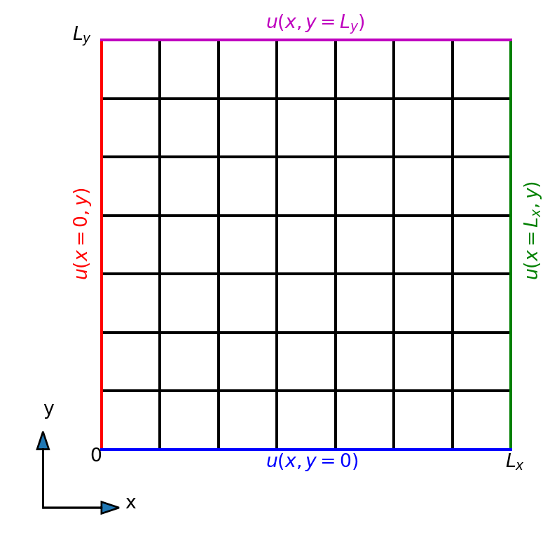
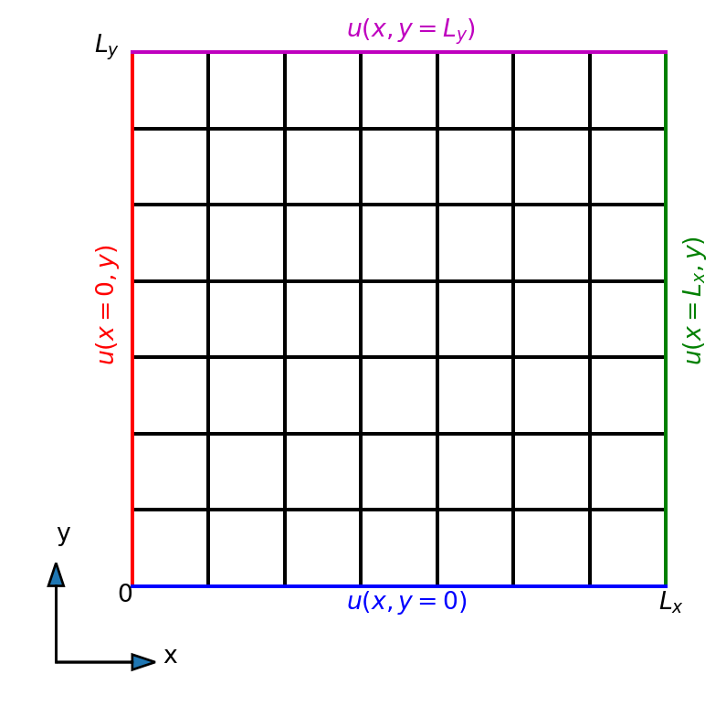
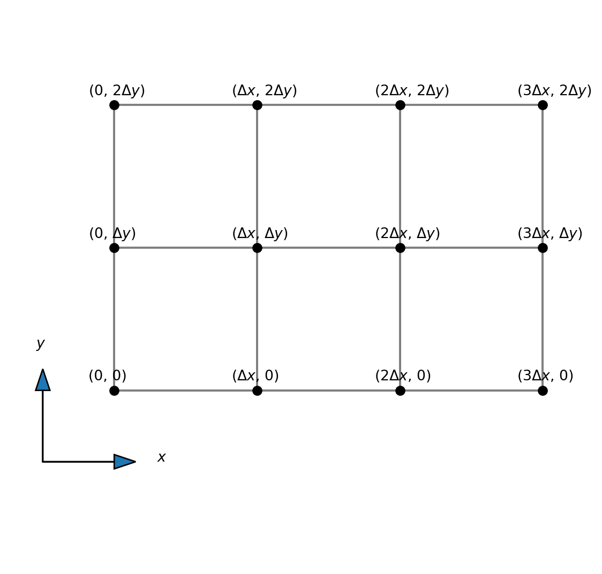
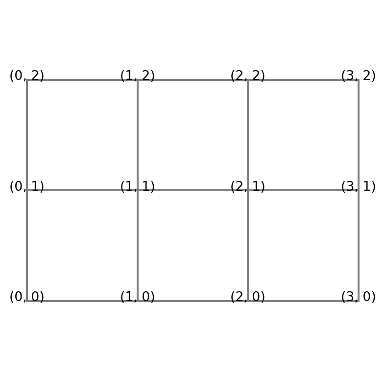
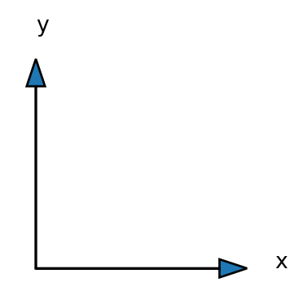
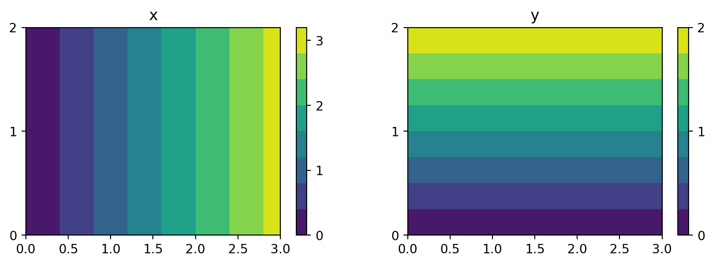
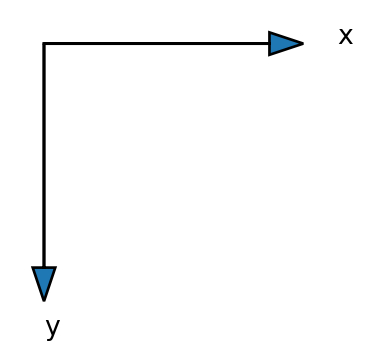
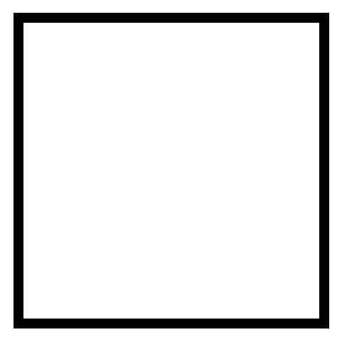

MATMEK-4270
We start by considering the Poisson equation
\[ \nabla^2 u = f, \]
which in two-dimensional Cartesian coordinates is
\[ \frac{\partial^2 u}{\partial x^2} + \frac{\partial^2 u}{\partial y^2} = f. \]
We consider the equation for a rectangular domain
\[(x, y) \in [0, L_x] \times [0, L_y],\]
and Dirichlet boundary conditions.

Boundary conditions on any side may be a function of the non-constant variable \[\begin{align*} \color{red}{ u(x=0, y)} &= f(y) \\ \color{blue}{u(x, y=0)} &= f(x) \end{align*}\]
where \(f\) is a function of one variable, \(f: \mathbb{R}\rightarrow \mathbb{R}\)
Note
The boundary conditions need to be consistent in the corners, because each corner belongs to two sides.
We discretize the mesh using two lines, one in the \(x\)-direction and one in the \(y\)-direction:
\[ x_i = i \Delta x, \quad i = 0, 1, \ldots, N_x \]
\[ y_j = j \Delta y, \quad j = 0, 1, \ldots, N_y \]
where \(\Delta x = L_x/N_x\) and \(\Delta y = L_y/N_y\). Vector notation for the mesh is
\[ \boldsymbol{x} = (x_0, x_1, \ldots, x_{N_x}) \] \[ \boldsymbol{y} = (y_0, y_1, \ldots, y_{N_y}) \]
How do we create the 2D mesh?
Consider the two tuples
\[\boldsymbol{u}=(1, 2, 3) \quad \boldsymbol{v}=(4, 5)\]
Compute the Cartesian product of these two tuples using the Python package itertools
((1, 4), (1, 5), (2, 4), (2, 5), (3, 4), (3, 5))The outcome is a tuple containing all possible ordered pairs of items, where the first item is from \(\boldsymbol{u}\) and the second from \(\boldsymbol{v}\).
Note
The Cartesian product can be described mathematically as
\[ \boldsymbol{u} \times \boldsymbol{v} = \{ (u, v) \, | \, u \in \boldsymbol{u} \text{ and } v \in \boldsymbol{v} \}, \]
which reads the set of all pairs \((u, v)\) such that \(u\) is in the set \(\boldsymbol{u}\) and \(v\) in the set \(\boldsymbol{v}\).
Note
Why is this relevant for computational meshes?
We have grid lines \[ \boldsymbol{x} = (x_0, x_1, \ldots, x_{N_x}) = (0, \Delta x, 2 \Delta x, \ldots, L_x) \] \[ \boldsymbol{y} = (y_0, y_1, \ldots, y_{N_y}) = (0, \Delta y, 2 \Delta y, \ldots, L_y) \]

The mesh is all pairs \((x, y)\) such that \(x\) is in \(\boldsymbol{x}\) and \(y\) is in \(\boldsymbol{y}\).
\[ \boldsymbol{x} \times \boldsymbol{y} = \{(x, y) \, | \, x \in \boldsymbol{x} \text{ and } y \in \boldsymbol{y} \} \]
[(0, 0), (0, 1), (0, 2), (1, 0), (1, 1), (1, 2), (2, 0), (2, 1), (2, 2), (3, 0), (3, 1), (3, 2)]It is the same as a double for-loop
[(0, 0), (0, 1), (0, 2), (1, 0), (1, 1), (1, 2), (2, 0), (2, 1), (2, 2), (3, 0), (3, 1), (3, 2)]However, the numbers are naturally seen as points in a 2D mesh:

Note
Let us now compute our Cartesian mesh using numpy.meshgrid. We have the 1D mesh arrays
\[ \boldsymbol{x} = (0, 1, 2, 3) \quad \text{ and } \quad \boldsymbol{y} = (0, 1, 2), \]
where we have chosen \(\Delta x = \Delta y = 1\) just for simplicity. An implementation goes like
Numpy.meshgrid returns two arrays of shape \(4 \times 3\)
(array([[0., 0., 0.],
[1., 1., 1.],
[2., 2., 2.],
[3., 3., 3.]]),
array([[0., 1., 2.],
[0., 1., 2.],
[0., 1., 2.],
[0., 1., 2.]]))Note
We excpect a coordinate system to be like

However, there is no mistake. This is simply how matrices are stored.
x, y = mesh
fig, (ax0, ax1) = plt.subplots(nrows=1, ncols=2, sharex=True,
figsize=(10, 3))
c0 = ax0.contourf(x, y, x)
c1 = ax1.contourf(x, y, y)
ax0.set_title('x');
ax1.set_title('y');
ax0.set_yticks([0, 1, 2])
ax1.set_yticks([0, 1, 2])
fig.colorbar(c0, ticks=[0, 1, 2, 3]);
fig.colorbar(c1, ticks=[0, 1, 2]);
Just as expected:-)
You can also choose Cartesian indexing for the meshgrid
x = np.linspace(0, Lx, Nx+1)
y = np.linspace(0, Ly, Ny+1)
mesh = np.meshgrid(x, y, indexing='xy')
mesh(array([[0., 1., 2., 3.],
[0., 1., 2., 3.],
[0., 1., 2., 3.]]),
array([[0., 0., 0., 0.],
[1., 1., 1., 1.],
[2., 2., 2., 2.]]))But it is still not completely as expected, because \(y\) is increasing downwards!

It is not necessary to store the complete arrays, because \(x\) is not changing along the \(y\)-axis and \(y\) is not changing along the \(x\)-axis.
(array([[0., 0., 0.],
[1., 1., 1.],
[2., 2., 2.],
[3., 3., 3.]]),
array([[0., 1., 2.],
[0., 1., 2.],
[0., 1., 2.],
[0., 1., 2.]]))Use sparse option:
(array([[0.],
[1.],
[2.],
[3.]]),
array([[0., 1., 2.]]))The \(x\)-array is constant along the \(y\)-axis and the \(y\)-array is constant along the \(x\)-axis
(array([[0.],
[1.],
[2.],
[3.]]),
array([[0., 1., 2.]]))(4, 1)(1, 3)The added dimension of length 1 is important for how the array broadcasts. The extra dimension tells Numpy that the array is constant along this other axis. That is, mesh[0] is constant along the second axis, no matter what size the second axis is. Similarly, mesh[1] is constant along the first axis. And since the 2D array is constant along that direction it is not necessary to actually store the numbers! So this is memory efficient.
So what happens if you now have this sparse mesh and you create a mesh function
\[ f(x, y) = x + y \]
Compute \[ f(x, y) = x + y \]
when \(x\) and \(y\) are stored using sparse matrices of shape \((4, 1)\) and \((1, 3)\)
A mesh function on the two-dimensional domain will now be denoted as
\[ u_{ij} = u(x_i, y_j). \]
The mesh function is a dense two-dimensional array of shape \({(N_x+1)\times (N_y+1)}\) and we will write \(U = (u_{ij})_{i,j=0}^{N_x, N_y}\). It may also be considered a matrix.
\[ \begin{bmatrix} u_{0, 0} & u_{0, 1} & \cdots & u_{0, N_y} \\ u_{1, 0} & u_{1, 1} & \cdots & u_{1, N_y} \\ \vdots & \vdots & \ddots & \vdots \\ u_{N_x, 0} & u_{N_x, 1} & \cdots & u_{N_x, N_y} \\ \end{bmatrix} \]
For the component \(u_{ij}\), we note that \(i\) represents row and \(j\) represents column. This is matrix storage, like we got for meshgrid using indexing="ij".
In Python a matrix is row-major. This means that the matrix that looks like
\[ \begin{bmatrix} u_{0, 0} & u_{0, 1} & \cdots & u_{0, N_y} \\ u_{1, 0} & u_{1, 1} & \cdots & u_{1, N_y} \\ \vdots & \vdots & \ddots & \vdots \\ u_{N_x, 0} & u_{N_x, 1} & \cdots & u_{N_x, N_y} \\ \end{bmatrix} \]
is stored in memory with a long sequence of numbers row by row like
\[ \underbrace{u_{0, 0}, u_{0, 1}, \cdots, u_{0, N_y}}_{\text{First row}}, \underbrace{u_{1, 0}, u_{1, 1}, \cdots, u_{1, N_y}}_{\text{Second row}}, \cdots \cdots, \underbrace{u_{N_y, 0}, u_{N_y, 1}, \cdots, u_{N_y, N_y}}_{\text{Last row}} \]
Note
The computer does not know anything about these numbers belonging to a two-dimensional array. The computer only knows that \((N_x+1)(N_y+1)\) numbers are stored side by side.
We can get the single row \(i\) of the \(U\) matrix as \(u_i = (u_{i,0}, u_{i,1}, \ldots, u_{i, N_y})\). For example,
array([[0, 1, 2],
[3, 4, 5],
[6, 7, 8]])array([0, 1, 2])array([3, 4, 5])array([6, 7, 8])The matrix is laid out in memory as
To get columns
Let us move back to the Poisson equation
\[ \frac{\partial^2 u}{\partial x^2} + \frac{\partial^2 u}{\partial y^2} = f. \]
Use second order central differences in both directions
\[ \frac{u_{i+1,j} - 2u_{i,j} + u_{i-1, j}}{\Delta x^2} + \frac{u_{i,j+1} - 2u_{i,j} + u_{i, j-1}}{\Delta y^2} = f_{i,j}. \]
Note
How to vectorize in 2D? How to use the derivative matrix \(D^{(2)}\)?
The second order second derivative matrix can be written as
\[ D_x^{(2)} = \frac{1}{\Delta x^2}\begin{bmatrix} 2 & -5 & 4 & -1 & 0 & 0 & 0 & 0 \\ 1 & -2 & 1 & 0 & 0 & 0 & 0 & \cdots \\ 0 & 1 & -2 & 1 & 0 & 0 & 0 & \cdots \\ \vdots & & & \ddots & & & &\cdots \\ \vdots & 0 & 0 & 0 & 1& -2& 1& 0 \\ \vdots & 0 & 0& 0& 0& 1& -2& 1 \\ 0 & 0 & 0 & 0 & -1 & 4 & -5 & 2 \\ \end{bmatrix} \]
We use \(D^{(2)} = \Delta x^2 D^{(2)}_x\) for an unscaled matrix.
Hence, for \(y\)-direction \(D^{(2)}_y = \frac{1}{\Delta y^2} D^{(2)}\).
scipy.sparseimport scipy.sparse as sparse
def D2(N):
D = sparse.diags([1, -2, 1], [-1, 0, 1], (N+1, N+1), 'lil')
D[0, :4] = 2, -5, 4, -1
D[-1, -4:] = -1, 4, -5, 2
return D
print(D2(8).toarray())[[ 2. -5. 4. -1. 0. 0. 0. 0. 0.]
[ 1. -2. 1. 0. 0. 0. 0. 0. 0.]
[ 0. 1. -2. 1. 0. 0. 0. 0. 0.]
[ 0. 0. 1. -2. 1. 0. 0. 0. 0.]
[ 0. 0. 0. 1. -2. 1. 0. 0. 0.]
[ 0. 0. 0. 0. 1. -2. 1. 0. 0.]
[ 0. 0. 0. 0. 0. 1. -2. 1. 0.]
[ 0. 0. 0. 0. 0. 0. 1. -2. 1.]
[ 0. 0. 0. 0. 0. -1. 4. -5. 2.]]\[ u(x, y) = x^2, \]
such that
\[ \frac{\partial^2 u}{\partial x^2} = 2. \]
Use domain \([0, 4]\times [0, 4]\) and choose \(\Delta x = \Delta y = 1\). Create the Cartesian mesh:
From this mesh we can create the mesh function \(u(x, y) = x^2\)
Use the one-dimensional derivative matrix \(D^{(2)}\) along the first axis of \(U=(u_{i,j})_{i,j=0}^{N_x, N_y}\)
\[ D^{(2)} U = \sum_{k=0}^{N_x} d^{(2)}_{ik} u_{k,j} \]
So \(D^{(2)} U\) is a matrix-matrix product between the two matrices \(D^{(2)}\in \mathbb{R}^{(N_x+1)\times (N_x+1)}\) and \(U \in \mathbb{R}^{(N_x+1) \times (N_y+1)}\), such that \(D^{(2)}U \in \mathbb{R}^{(N_x+1) \times (N_y+1)}\)
Create another mesh function
\[ u(x, y) = y^2, \]
such that again the second derivative \(\partial^2 u / \partial y^2\) should be 2. Create first \(u\)
To get a derivative along the second axis we need to apply the matrix \(D^{(2)}\) along the second axis of \(U\):
\[ \sum_{k=0}^{N_y} u_{i, k} d^{(2)}_{j, k} \]
In matrix form this can be written as
\[ U (D^{(2)})^T \]
which we can verify as follows
Using now that \(\partial^2 u/\partial x^2 = D_x^{(2)}U\) and \(\partial^2 u/\partial y^2 = U(D_y^{(2)})^T\) we can write Poisson’s equation on discretized (and matrix) form as
\[ D_x^{(2)} U + U (D_y^{(2)})^T = F, \]
where the mesh function \(F = (f(x_i, y_j))_{i,j=0}^{N_x, N_y}\).
How can we solve this equation for the unknown matrix \(U\)?
Can we write this equation as
\[ Ax = b \]
where \(A\) is the coefficient matrix, \(x\) is the unknown vector and \(b\) is the rhs vector?
Can we transform our unknown matrix \(U\) into a vector?
Consider first for simplicity a \(2 \times 2\) matrix
\[ A = \begin{bmatrix} a & b \\ c & d \end{bmatrix} \]
In general, a row-major vectorization transforms the matrix into a vector as follows
\[ \begin{bmatrix} a & b \\ c & d \end{bmatrix} \longrightarrow \begin{bmatrix} a & b & c & d \end{bmatrix}^T = \begin{bmatrix} a \\ b \\ c \\ d \end{bmatrix} \]
This operation is referred to as vec(A) and thus
\[ \text{vec}(A) = \begin{bmatrix} a & b & c & d \end{bmatrix}^T \]
Note
The vec-trick transforms a matrix into a vector! Just like numpy.ravel.
Poisson’s equation contains matrix matrix products
\[ D^{(2)}_x U + U (D^{(2)}_y) \]
How can these be vectorized if we want to ravel U?
Enter the Kronecker product!
\[ A = \begin{bmatrix} a_{00} & a_{01} \\ a_{10} & a_{11} \end{bmatrix} \quad \text {and} \quad B = \begin{bmatrix} b_{00} & b_{01} \\ b_{10} & b_{11} \end{bmatrix} \]
Let
\[ C = A B \quad \text{such that} \quad c_{ij} = \sum_{k\in(0, 1)}a_{ik}b_{kj} \]
And as before
\[ \text{vec}(C) = \begin{bmatrix} c_{00} & c_{01} & c_{10} & c_{11} \end{bmatrix}^T \quad \text{vec}(B) = \begin{bmatrix} b_{00} & b_{01} & b_{10} & b_{11} \end{bmatrix}^T \]
How do we find the matrix \(M\):
\[ \text{vec}(C) = \text{vec}(AB) = M \text{vec}(B) \]
\[ \text{vec}(C) = \text{vec}(AB) = M \text{vec}(B) \]
\[ \underbrace{ \begin{bmatrix} c_{00} \\ c_{01} \\ c_{10} \\ c_{11} \end{bmatrix}}_{\text{vec}(C)} = \underbrace{ \begin{bmatrix} m_{00} & m_{01} & m_{02} & m_{03} \\ m_{10} & m_{11} & m_{12} & m_{13} \\ m_{20} & m_{21} & m_{22} & m_{23} \\ m_{30} & m_{31} & m_{32} & m_{33} \\ \end{bmatrix}}_{M} \underbrace{ \begin{bmatrix} b_{00} \\ b_{01} \\ b_{10} \\ b_{11} \end{bmatrix}}_{\text{vec}(B)} \]
How to find \(M\)?
Note that from \(c_{ij} = a_{i0}b_{0j} + a_{i1}b_{1j}\) we have:
\[ \begin{align*} c_{00} &= a_{00}b_{00} + a_{01}b_{10} \\ c_{01} &= a_{00}b_{01} + a_{01}b_{11} \\ c_{10} &= a_{10}b_{00} + a_{11}b_{10} \\ c_{11} &= a_{10}b_{01} + a_{11}b_{11} \end{align*} \]
\[ C = AB \quad \text{and thus} \quad c_{ij} = a_{i0}b_{0j} + a_{i1}b_{1j} \]
is obtained for the following matrix \(M\)
\[ \underbrace{ \begin{bmatrix} c_{00} \\ c_{01} \\ c_{10} \\ c_{11} \end{bmatrix}}_{\text{vec}(C)} = \underbrace{ \begin{bmatrix} a_{00} & 0 & a_{01} & 0 \\ 0 & a_{00} & 0 & a_{01} \\ a_{10} & 0 & a_{11} & 0 \\ 0 & a_{10} & 0 & a_{11} \\ \end{bmatrix}}_{M} \underbrace{ \begin{bmatrix} b_{00} \\ b_{01} \\ b_{10} \\ b_{11} \end{bmatrix}}_{\text{vec}(B)} \]
Just check that this corresponds to \[ \begin{align*} c_{00} &= a_{00}b_{00} + a_{01}b_{10} \\ c_{01} &= a_{00}b_{01} + a_{01}b_{11} \\ c_{10} &= a_{10}b_{00} + a_{11}b_{10} \\ c_{11} &= a_{10}b_{01} + a_{11}b_{11} \end{align*} \]
If \(A\) and \(B\) are matrices of dimensions \(p \times q\) and \(r \times s\), respectively, then \(A \otimes B\) is the matrix of dimension \(pr \times qs\), with \(p \times q\) block form, where the \(i, j\) block is \(a_{ij}B\). The Kronecker product is most simply illustrated for two small matrices of shape \(2 \times 2\):
\[ \begin{bmatrix} 1 & 2 \\ 3 & 4 \end{bmatrix} \otimes \begin{bmatrix} a & b \\ c & d \end{bmatrix} = \left(\begin{array}{c|c} \begin{matrix} a & b \\ c & d \end{matrix} & \begin{matrix} 2a & 2b \\ 2c & 2d \end{matrix} \\ \hline \begin{matrix} 3a & 3b \\ 3c & 3d \end{matrix} & \begin{matrix} 4a & 4b \\ 4c & 4d \end{matrix} \end{array}\right) \]
\[ \begin{bmatrix} 1 & 0 \\ 0 & 1 \end{bmatrix} \otimes \begin{bmatrix} a & b \\ c & d \end{bmatrix} = \left(\begin{array}{c|c} \begin{matrix} a & b \\ c & d \end{matrix} & \begin{matrix} 0 & 0 \\ 0 & 0 \end{matrix} \\ \hline \begin{matrix} 0 & 0 \\ 0 & 0 \end{matrix} & \begin{matrix} a & b \\ c & d \end{matrix} \end{array}\right) \]
and
\[ \begin{bmatrix} a & b \\ c & d \end{bmatrix} \otimes \begin{bmatrix} 1 & 0 \\ 0 & 1 \end{bmatrix} = \left(\begin{array}{c|c} \begin{matrix} a & 0 \\ 0 & a \end{matrix} & \begin{matrix} b & 0 \\ 0 & b \end{matrix} \\ \hline \begin{matrix} c & 0 \\ 0 & c \end{matrix} & \begin{matrix} d & 0 \\ 0 & d \end{matrix} \end{array}\right) \]
A very useful result is
\[ \text{vec}(ABC^T) = (A \otimes C) \text{vec}(B) \]
Hence in the example from before with \(C=AB\):
\[\text{vec}(C) = \text{vec}(AB) = \text{vec}(ABI) = (A \otimes I) \text{vec}(B)\]
\[ A \otimes I = \begin{bmatrix} a_{00} & 0 & a_{01} & 0 \\ 0 & a_{00} & 0 & a_{01} \\ a_{10} & 0 & a_{11} & 0 \\ 0 & a_{10} & 0 & a_{11} \\ \end{bmatrix} \] where \(I\) is the identity matrix.
Consider the second derivative in the \(x\)-direction
\[ \frac{\partial^2 u}{ \partial x^2} \]
With regular matrices we can compute this as
\[ D^{(2)}_x U \]
How to compute the second derivative using vectorization?
\[ \text{vec}(D^{(2)}_x U) = \text{vec}({D^{(2)}_x U I}) = \underbrace{(D^{(2)}_x \otimes I)}_{M} \text{vec}(U) \]
Implementation using scipy.sparse
[[2. 2. 2. 2. 2.]
[2. 2. 2. 2. 2.]
[2. 2. 2. 2. 2.]
[2. 2. 2. 2. 2.]
[2. 2. 2. 2. 2.]]Same exact result! Since the result d2u is a 1D array, we reshape into matrix form.
\[ \text{vec}\left(D_x^{(2)}U + U (D_y^{(2)})^T \right) = \text{vec}(F), \]
and since vectorization is a linear process
\[ \text{vec}\left(D_x^{(2)}U\right) + \text{vec}\left(U (D_y^{(2)})^T \right) = \text{vec}(F). \]
\[ \left(D_x^{(2)} \otimes I_{y} + I_{x} \otimes D_y^{(2)} \right) \text{vec}(U) = \text{vec}(F). \]
This is a linear equations of type \(Ax=b\), where \(A = D_x^{(2)} \otimes I_{y} + I_{x} \otimes D_y^{(2)}\), \(x = \text{vec}(U)\) and \(b = \text{vec}(F)\).
Note
Vectorization is a linear process that allows us to transform a matrix into a vector. Through vectorization we can express matrix-multiplication through a larger matrix using the Kronecker product.
The Laplace operator \(\nabla^2\) applied to a two-dimensional field \(u(x, y)\) in Cartesian coordinates is
\[ \nabla^2 u = \frac{\partial^2 u}{\partial x^2} + \frac{\partial^2 u}{\partial y^2} \]
Discretized on a structured Cartesian mesh we get
\[ \nabla^2 u \approx \left(D_x^{(2)} \otimes I_{y} + I_{x} \otimes D_y^{(2)} \right) \text{vec}(U) \]
We are now almost ready to solve the Poisson equation
\[ \nabla^2 u(x, y) = f(x, y), \quad (x, y) \in \Omega = (0, 1) \times (0, 1) \]
with Dirichlet boundary conditions \(u(x, y) = 0\) at all four sides.
But how to fix boundary conditions?
In order to set Dirichlet boundary conditions we need to set the value of \(U\) to zero on all four boundaries:
\[ \begin{align*} u_{0, j} = 0 \quad j \in \{0, 1, \ldots, N_y\}, \\ u_{N_x, j} = 0 \quad j \in \{0, 1, \ldots, N_y\},\\ u_{i, 0} = 0 \quad i \in \{0, 1, \ldots, N_x\}, \\ u_{i, N_y} = 0 \quad i \in \{0, 1, \ldots, N_x\}. \end{align*} \]
But where are all the boundary points? Can we manipulate the matrix \(M\) in order to fix Dirichlet boundary conditions?
We can do this by identing all rows of M corresponding to a boundary point. But which indices in M correspond to boundaries? We can find this easily with a little slicing and trickery. Lets create a mesh function B that is one on the boundary and zero elsewhere
Nx, Ny = 30, 30
B = np.ones((Nx+1, Ny+1), dtype=bool)
B[1:-1, 1:-1] = 0
fig = plt.figure(figsize=(3, 3))
plt.imshow(B, cmap='gray_r')
plt.gca().axis('off')
Find all the points in the vectorized array \(\text{vec}(B)\) that equals 1:
[ 0 1 2 3 4 5 6 7 8 9 10 11 12 13 14 15 16 17
18 19 20 21 22 23 24 25 26 27 28 29 30 31 61 62 92 93
123 124 154 155 185 186 216 217 247 248 278 279 309 310 340 341 371 372
402 403 433 434 464 465 495 496 526 527 557 558 588 589 619 620 650 651
681 682 712 713 743 744 774 775 805 806 836 837 867 868 898 899 929 930
931 932 933 934 935 936 937 938 939 940 941 942 943 944 945 946 947 948
949 950 951 952 953 954 955 956 957 958 959 960]Lets use the method of manufactured solutions and guess a solution
\[ u(x, y) = x(1-x)y(1-y)\exp(\cos(4 \pi x)\sin(2 \pi y)), \]
The right hand side function \(f(x, y)\) is then
The 2D mesh and mesh function F can be computed as